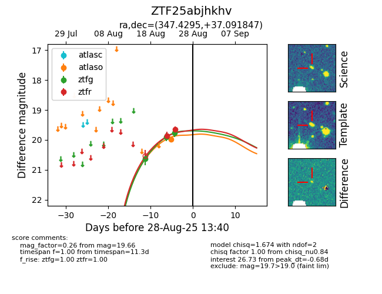

Target ZTF25abjhkhv at 2025-08-26 10:32, see:
FINK: fink-portal.org/ZTF25abjhkhv
Lasair: lasair-ztf.lsst.ac.uk/objects/ZTF25abjhkhv
ALeRCE: alerce.online/object/ZTF25abjhkhv
alt names
ZTF25abjhkhv (ztf,fink)
coordinates:
equatorial (ra, dec) = (347.4295,+37.09185)
galactic (l, b) = (101.3344,-21.47728)
photometry
last atlaso=19.98, ztfg=19.76, ztfr=19.66
1 atlaso, 3 ztfg, 2 ztfr detections
